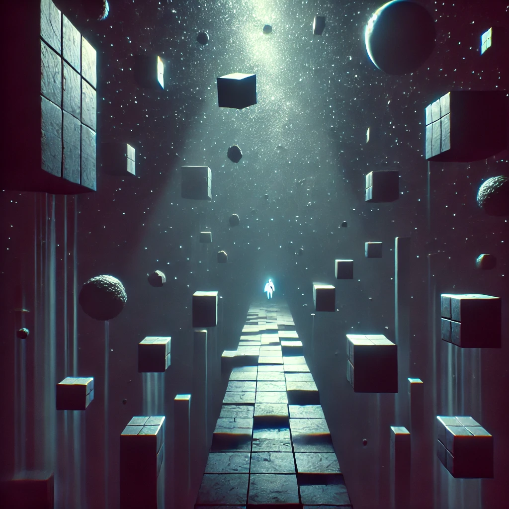

Sombras Geométricas es una experiencia narrativa inmersiva que atraviesa los límites de los sueños y la realidad. A través de un viaje que explora los recuerdos de un sueño recurrente, te invitamos a participar en una historia en la que las formas cambian y la claridad se desdibuja. Explora esta narrativa única en múltiples plataformas.
Escucha este primer episodio de los recuerdos del protagonista y su relación con el sueño. Cada episodio revela nuevas capas emocionales y misteriosas.
Un vistazo al concepto visual de "Sombras Geométricas", donde el jugador explora una pista flotante rodeada de formas geométricas en un entorno oscuro y surrealista. Este juego busca sumergir a los jugadores en una experiencia visual única y misteriosa.
Nos encantaría escuchar tus historias. Completa el formulario a continuación para enviarnos tu relato y tener la oportunidad de que sea incluido en nuestro podcast.
Suscríbete para recibir actualizaciones exclusivas y contenido adicional de Sombras Geométricas.
Comentarios de nuestra comunidad
"Me encanta la idea de explorar los sueños a través de una narrativa transmedia. El audio es interesante, se puede abarcar mejores efectos de sonido para hacerlo mas inmersivo pero es buena la idea ."
- Sofía García"La idea del boceto es buena, tener similitudes de ese concept art en un juego se ve interesante"
- Juan López"La sección para compartir historias es una gran idea. El poder dar un concepto tipo podcast a un sueño da una inmersion interesante."
- Valeria Martínez"Un proyecto unico y curioso, ya que los sueños siempre son un mundo muy diferente que muchas veces no todos tienen la oportunidad de recordar tan constantemente"
- Andrés Herrera"La tematica del proyecto es interesante, el enfocar un sueño como este a un posible juego da ver el realismo que fue el sueño para el que lo tuvo y lo vivio constantemente y que lo pueda trasmitir visualmente alguna ves, me parece muy bien "
- Camila Rodríguez